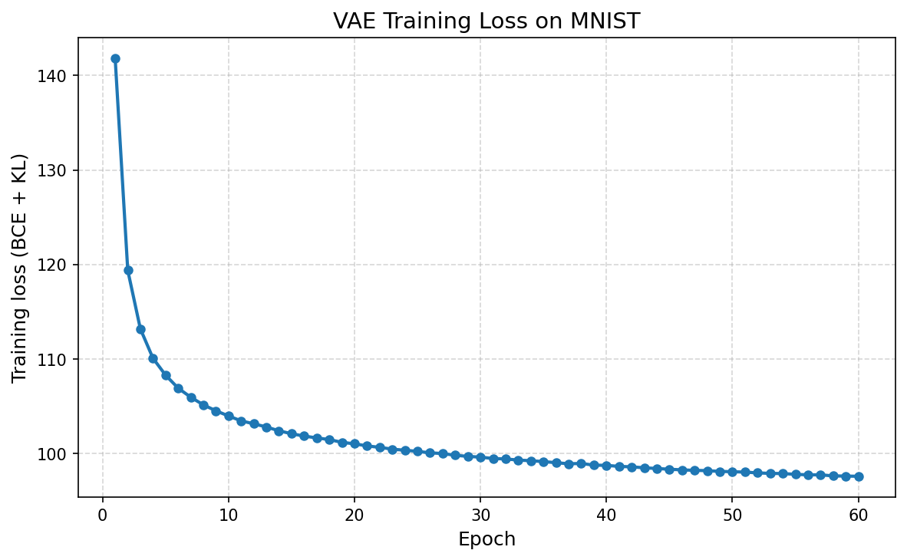
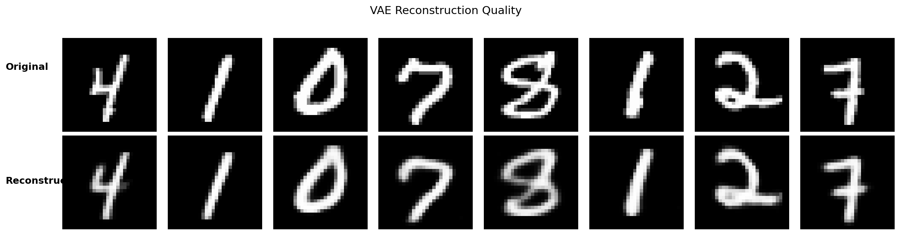
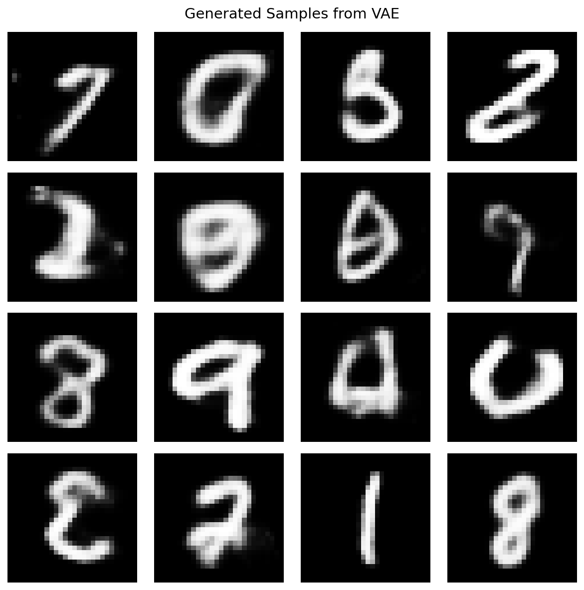
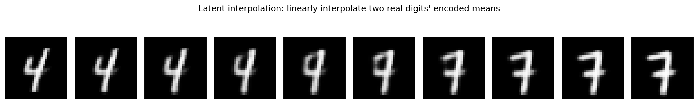

Quickstart: Train Your First VAE¤
This page mirrors the checked-in executable quickstart in
docs/getting-started/quickstart.py and the paired notebook
docs/getting-started/quickstart.ipynb. It keeps the public
onboarding path limited to the live VAE-first workflow that is already
exercised in the repository.
The four visual artifacts shown below — sample grid, reconstruction comparison, training loss curve, and latent-space interpolation — are real outputs produced by running the same script end-to-end on MNIST.
Prerequisites¤
- Python 3.10 or higher
- 8 GB RAM (16 GB recommended)
- Optional: NVIDIA GPU with CUDA 12.0+ for faster training
Step 1: Install Artifex¤
Choose your preferred installation method:
Verify installation:
python -c "import jax; print(f'JAX backend: {jax.default_backend()}')"
# Should print: JAX backend: gpu (or cpu)
Contributors can validate the checkout after setup with:
Step 2: Train Your First VAE¤
Create a new Python file train_vae.py using the same supported workflow as the
executable quickstart pair:
import jax
import jax.numpy as jnp
import matplotlib.pyplot as plt
import optax
from datarax.sources import from_tfds
from flax import nnx
from artifex.generative_models.core.configuration import (
DecoderConfig,
EncoderConfig,
VAEConfig,
)
from artifex.generative_models.models.vae import VAE
from artifex.generative_models.training import train_epoch_staged
from artifex.generative_models.training.trainers import VAETrainer, VAETrainingConfig
# 1. Load MNIST with the current Datarax TFDS factory in eager mode
print("Loading MNIST...")
mnist_source = from_tfds("mnist", "train", eager=True, shuffle=True, seed=42, rngs=nnx.Rngs(0))
images = mnist_source.data["image"].astype(jnp.float32) / 255.0
print(f"Loaded {len(mnist_source)} images, shape: {images.shape}")
# 2. Configure a CNN VAE
encoder = EncoderConfig(
name="mnist_cnn_encoder",
input_shape=(28, 28, 1),
latent_dim=20,
hidden_dims=(32, 64, 128),
activation="relu",
use_batch_norm=False,
)
decoder = DecoderConfig(
name="mnist_cnn_decoder",
latent_dim=20,
output_shape=(28, 28, 1),
hidden_dims=(32, 64, 128),
activation="relu",
batch_norm=False,
)
model_config = VAEConfig(
name="mnist_cnn_vae",
encoder=encoder,
decoder=decoder,
encoder_type="cnn",
kl_weight=1.0,
)
# 3. Create model, optimizer, and trainer (linear KL annealing)
model = VAE(model_config, rngs=nnx.Rngs(0))
optimizer = nnx.Optimizer(model, optax.adam(2e-3), wrt=nnx.Param)
trainer = VAETrainer(
VAETrainingConfig(
kl_annealing="linear",
kl_warmup_steps=2000,
beta=1.0,
)
)
# 4. Stage data and run a JIT-compiled training loop.
# `train_epoch_staged` JITs the *entire epoch* with @nnx.jit and a fori_loop
# over batches — the `loss_fn` factory is cached on identity, so reusing the
# same `loss_fn` across epochs avoids recompilation.
staged_data = jax.device_put(images)
NUM_EPOCHS = 20
BATCH_SIZE = 128
# `train_epoch_staged` consumes a step-aware objective with signature
# (model, batch, rng, step); `trainer.create_loss_fn(...)` supplies that contract.
loss_fn = trainer.create_loss_fn(loss_type="bce")
# Warmup so the first measured epoch isn't dominated by JIT compile time.
_ = train_epoch_staged(
model, optimizer, staged_data[:256], batch_size=128,
rng=jax.random.key(999), loss_fn=loss_fn,
)
step = 0
epoch_losses: list[float] = []
for epoch in range(NUM_EPOCHS):
step, metrics = train_epoch_staged(
model, optimizer, staged_data,
batch_size=BATCH_SIZE, rng=jax.random.key(epoch),
loss_fn=loss_fn, base_step=step,
)
epoch_losses.append(float(metrics["loss"]))
print(f"Epoch {epoch + 1:2d}/{NUM_EPOCHS} | Loss: {metrics['loss']:7.2f}")
# 5. Generate, reconstruct, and interpolate in the latent space
samples = model.sample(n_samples=16)
test_images = jnp.array(images[:8])
reconstructed = model.reconstruct(test_images, deterministic=True)
# Linearly interpolate between two real digits' encoded means
mu_a, _ = model.encoder(images[0:1])
mu_b, _ = model.encoder(images[7:8])
ts = jnp.linspace(0.0, 1.0, 10).reshape(-1, 1)
z_path = (1.0 - ts) * mu_a + ts * mu_b
interpolation = model.decoder(z_path)
Run the script:
Sample output (loss values vary slightly run-to-run):
Loading MNIST...
Loaded 60000 images, shape: (60000, 28, 28, 1)
Epoch 1/20 | Loss: 111.04
Epoch 2/20 | Loss: 86.44
Epoch 3/20 | Loss: 89.81
...
Epoch 20/20 | Loss: 95.31
Training loss curve¤
Loss falls quickly during the BCE-dominated phase, then stabilizes once linear KL annealing has fully kicked in:

Step 3: Inspect Reconstructions¤
Encoding eight test digits and decoding them back through the model produces a faithful reconstruction. The decoder is the same network used for unconditional sampling — strong reconstructions confirm that the encoder–decoder pair has learned a usable latent representation:

Step 4: Generate New Samples¤
Drawing \(z \sim \mathcal{N}(0, I)\) from the prior and decoding produces a fresh batch of digits. With KL annealing complete, the latent distribution closely matches the standard-normal prior and most random draws decode into recognizable strokes:

Step 5: Walk the Latent Manifold¤
Encoding two real digits to their latent means and linearly interpolating between them produces a smooth morph from one digit into the other. Each frame is decoded from a point on the line \(z_t = (1-t)\,\mu_A + t\,\mu_B\), so a continuous transition is direct evidence that the VAE has learned a usable latent geometry rather than memorizing isolated points:

Reproducing These Visuals¤
The script in docs/getting-started/quickstart.py saves all four PNGs
into the current working directory:
| Artifact | File | Source step in quickstart.py |
|---|---|---|
| Loss curve | vae_loss_curve.png |
Step 6, after the training loop |
| Sample grid | vae_samples.png |
Step 6, after model.sample(...) |
| Reconstructions | vae_reconstruction.png |
Step 6, after model.reconstruct(...) |
| Latent interpolation | vae_latent_interpolation.png |
Step 6, after the decoder interpolation |
The Jupyter notebook (quickstart.ipynb) is auto-generated from the
.py script via scripts/jupytext_converter.py sync.
What You Just Did¤
- Loaded data efficiently with
from_tfds(..., eager=True) - Configured a CNN VAE with
VAEConfig - Used
VAETrainerwith linear KL annealing - Trained with
train_epoch_staged, where the entire epoch (the innerfori_loopover batches) is@nnx.jit-compiled and theloss_fn-keyed factory is cached across epochs - Generated new samples, reconstructions, and a latent-space interpolation
Next Steps¤
- Learn the architecture in Core Concepts
- Deep dive into latent models in the VAE Guide
- Explore additional public model families in Model Implementations
- Browse runnable examples in Examples